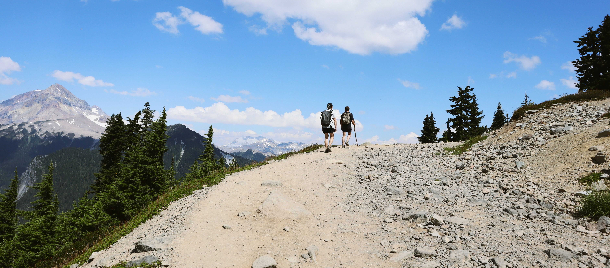
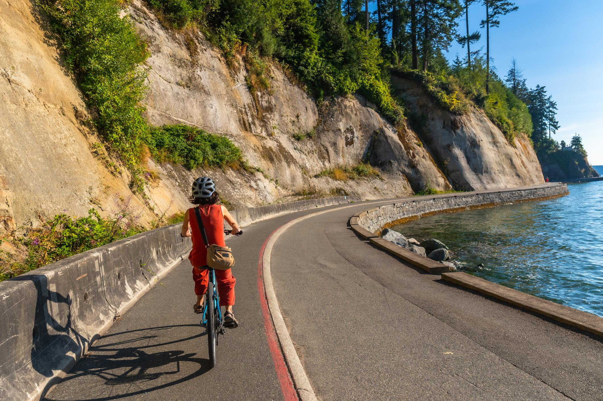
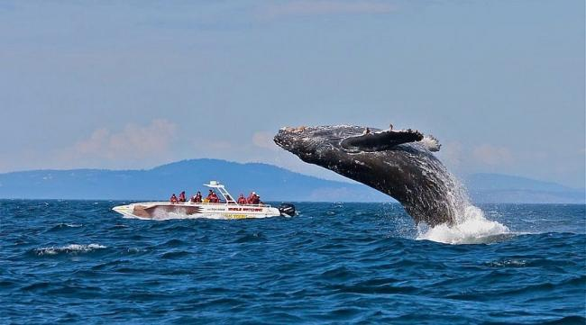
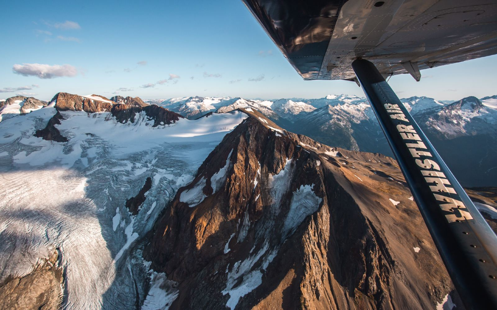
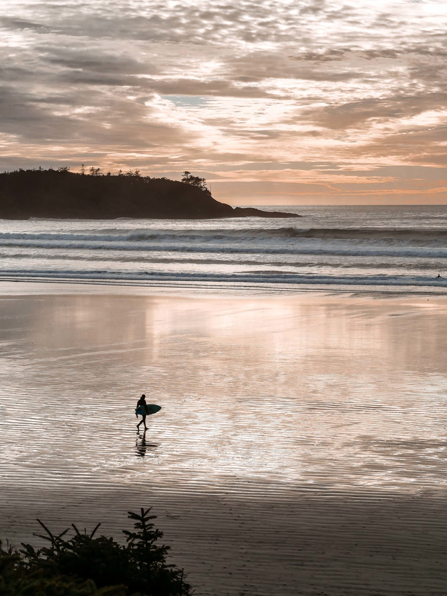
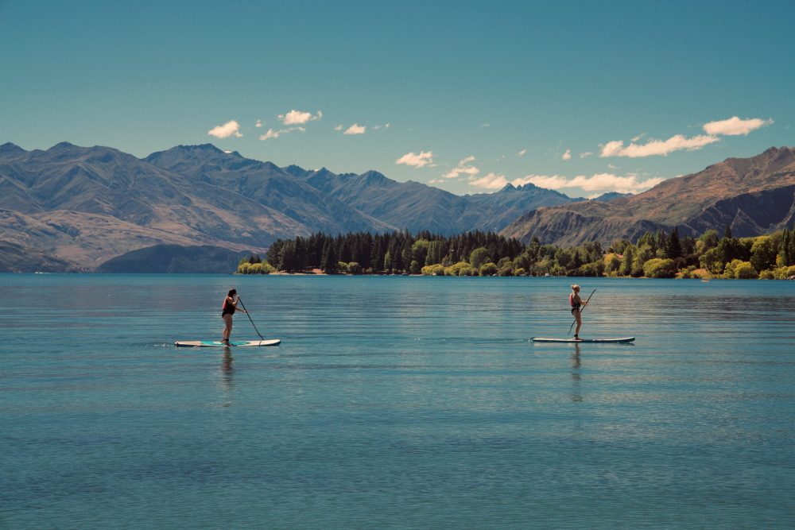
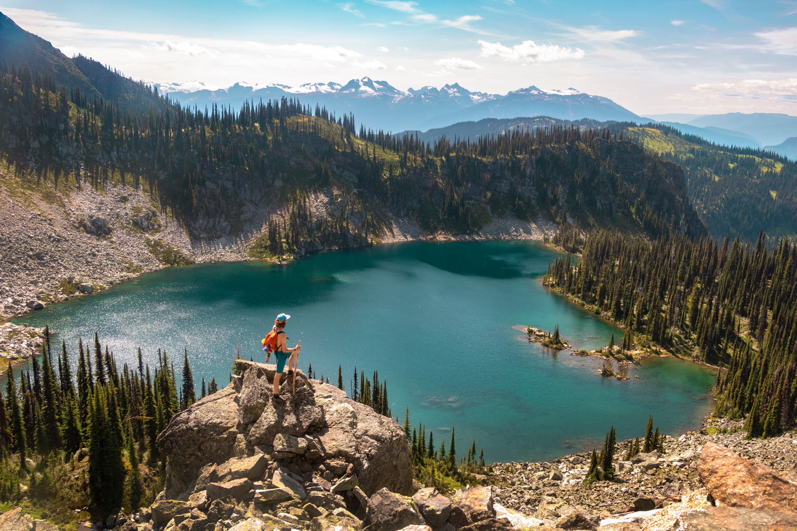

Things To Do in British Columbia
Explore some of the best destinations in BC and discover popular activities in each location.
Vancouver

- Bike or walk around Stanley Park Seawall.
- Visit Granville Island Public Market.
- Relax at English Bay or Kitsilano Beach.
Victoria

- Join a Discover the Past Chinatown walking tour
- Go whale watching with Eagle Wing Tours
- Kayak along the Victoria coastline
Whistler

- Ride the Peak 2 Peak Gondola
- Go bear viewing with a local guide
- Take a floatplane over glaciers
Tofino

- Surf at Cox Bay or Chesterman Beach
- Walk the Rainforest Trail in Pacific Rim Park
- Go storm watching along the wild coastline
Kelowna

- Swim or paddleboard on Okanagan Lake
- Bike the Myra Canyon trestle bridges
- Visit local wineries in the Okanagan Valley
Revelstoke

- Hike in Mount Revelstoke National Park
- Ride the Pipe Mountain Coaster
- Drive the Meadows in the Sky Parkway
Travel Tips
Pack for Changing Weather
Bring layers and a waterproof jacket, especially for coastal and mountain destinations.
Plan Transportation
Many scenic spots are outside major cities, so renting a car can make your trip much easier.
Book Early in Summer
Popular places like Whistler, Tofino, and Victoria can get busy, so reserve early when possible.
Respect Nature
Follow park rules, stay on marked trails, and keep a safe distance from wildlife.